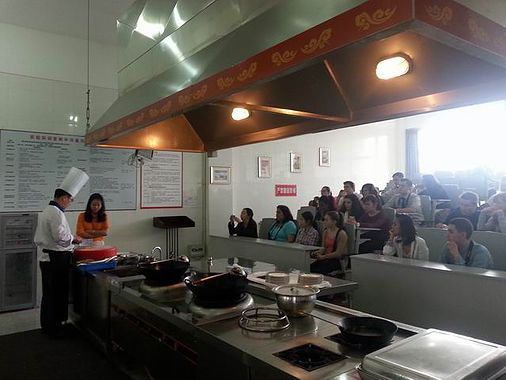
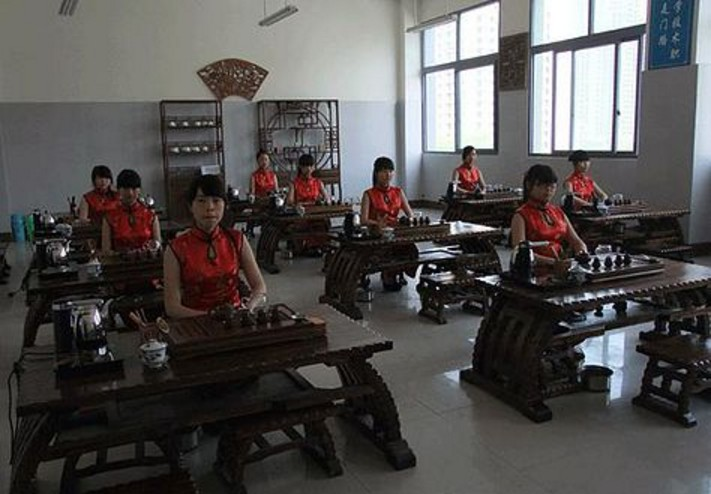
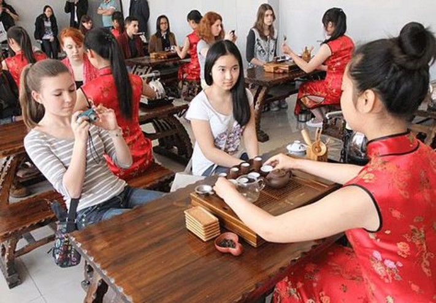

Reportage sur l'enseignement de la cuisine Chinoise

法国巴泽尔职业学校师生访问我校
2014年4月24日下午，法国巴泽尔职业学校师生24人访问我校，师生们参观了校园，在酒店实验实训教学中心观摩了川菜教学，品尝了川菜。学生们还去学校运动会现场为法国杜盖酒店管理学校的运动员加油助威。
法国巴泽尔职业学校师生的来访是继该校校长3月27日来访的延续。巴泽尔职业学校是法国香槟阿登大区的公立学校，开设有烹饪、酒店、旅游三个专业， 培养职业技能人才，服务于香槟阿登大区经济建设。该校常年开设中文课程，依托大区政府在成都设立的办事处，与四川省内高等职业院校开展多方面合作与交流。
Rapport de l’université tourisme du Sichuan
Des élèves du lycée de Bazeilles et leurs professeurs visitent notre établissement.
Dans l’après-midi du 24 avril 2014, les élèves et les professeurs du lycée de Bazeilles en France ont visité notre école; ils ont assisté à des cours de cuisine du Sichuan dans notre centre d'enseignement expérimental hôtellerie, et ils ont goûté à cette cuisine. Cette visite faisait suite à celle de Madame la proviseure du lycée de Bazeilles le 27 mars 2014.
Le lycée de Bazeilles est un lycée public qui se trouve dans la région Champagne Ardenne. Il y a trois sections : la cuisine, l’hôtellerie et le tourisme, où sont enseignées des compétences professionnelles, qui servent à la construction économique de cette région. Le lycée de Bazeilles a ouvert des cours de chinois depuis plusieurs années, en s'appuyant sur le bureau du gouvernement régional établi à Chengdu, province du Sichuan. Il s’est ainsi établi une coopération fructueuse et des échanges réguliers avec des écoles de formation professionnelle de cette province.
Reportage sur la cérémonie du Thé
 
法国巴泽尔职业学院师生来我校参观交流
2014年4月28日上午，法国巴泽尔职业学院旅游专业20多名师生来我校参观，并与我校旅游专业师生进行了互动交流。整个活动在热烈欢快的氛围中进行，同学们就旅游及酒店管理的基本技能进行了交流和展示，相互学习和切磋，取得了良好的效果。本次活动，促进了中法两国职业学生间的交流和沟通，加深了同学们之间的友谊。活动结束，全体师生合影留念。
Compte rendu du lycée professionnel de Langzhong
La visite d’élèves du lycée de Bazeilles et de leurs professeurs
Le matin du 28 avril, une vingtaine d’élèves du lycée de Bazeilles en France et leurs professeurs ont visité notre établissement. Ils ont échangé avec nos professeurs et nos élèves des sections hôtellerie et tourisme. La visite s’est déroulée dans une ambiance chaleureuse et gaie, les élèves échangeant leurs compétences de base du tourisme et de la gestion hôtelière. Ils ont beaucoup appris les uns des autres et ont obtenu de bons résultats. Cet événement visait à promouvoir les échanges et la communication entre les élèves chinois et français, et à développer des liens entre eux. A la fin de la matinée, les professeurs et les étudiants ont pris des photos.